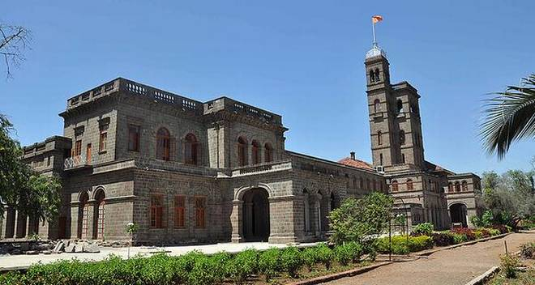
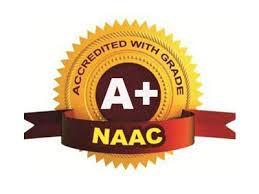

SAVITRIBAI PHULE
PUNE UNIVERSITY(SPPU)
 
Savitribai Phule Pune University, formerly University of Pune and University of Poona, is a collegiate public state university in Pune in the Indian state of Maharashtra. Established in 1949, and spread over a 411 acres (1.66 km2) campus,the university is home to 43 academic departments. The university is named after Savitribai Phule, a 19th-century Indian social reformer who is known for her contribution towards empowerment and emancipation of women through education. The university has affiliated colleges, departments, and research institutes, which are primarily in Pune.
The University of Pune is ranked 7th among universities in India, in 2018, by the Times Higher Education.
List Of Collages Unader (SPPU)SAVITRIBAI PHULE PUNE UNIVERSITY
- Department of Management Sciences, Savitribai Phule Pune University, Pune
- ABMSP's College of Engineering and Research, Pune
- AISSMS College of Engineering, Pune
- AISSMS College of Pharmacy, Pune
- AISSMS Institute of Management, Pune
- AJMVP New Arts Commerce and Science College, Ahmednagar
- AJMVP'S HKCCSM Institute of Management Research and Rural Development, Ahmednagar
- AJMVPS's Institute of Hotel Management and Catering Technology, Ahmednagar
- ASM Institute of Business Management and Research, Pune
- ASM Institute of Business Management, Pune
- ASM's College of Commerce Science and Information Technology, Pune
- ASMA Institute of Management, Pune
- Aayojan School of Architecture and Design, Pune
- Abacus Institute of Computer Application, Pune
- Abasaheb Kakade College of B Pharmacy, Shevgaon
- Abhinav Education Society College of Law, Pune
- Abhinav Education Society's College of Computer Science and Management, Pune
- Abhinav Education Society's College of Education, Pune
- Abhinav Education Society's Institute of Management and Research, Pune
- Abhinav Education Societys College of Pharmacy B Pharm, Haveli
- Abhinav Education Societys Institute of Management and Business Administration, Akole
- Adarsha Comprehensive College of Education and Research, Pune
- Adhalrao Patil Institute of Management and Research, Ambegaon
- Adhyapak Mahavidyalaya, Pune
- Aditya Institute of Management, Pune
- Adsul's Technical Campus, Ahmednagar
- Adv Manoharrao Nanasaheb Deshmukh Arts and Science College, Rajur
- Agasti Arts Commerce and Dadasaheb Rupwate Science College, Akole
- Ahmednagar Jilha Maratha Vidya Prasarak Samaj's New Arts Commerce and Science College, Parner
- Ahmednagar Jilha Maratha Vidya Prasarak Samajs New Law College, Ahmednagar
AND MUCH MORE:- More
This project is on the management of university website where all day to day life the new new technology
is come and new technic it is cover in over website by proper management
Contact Us By: